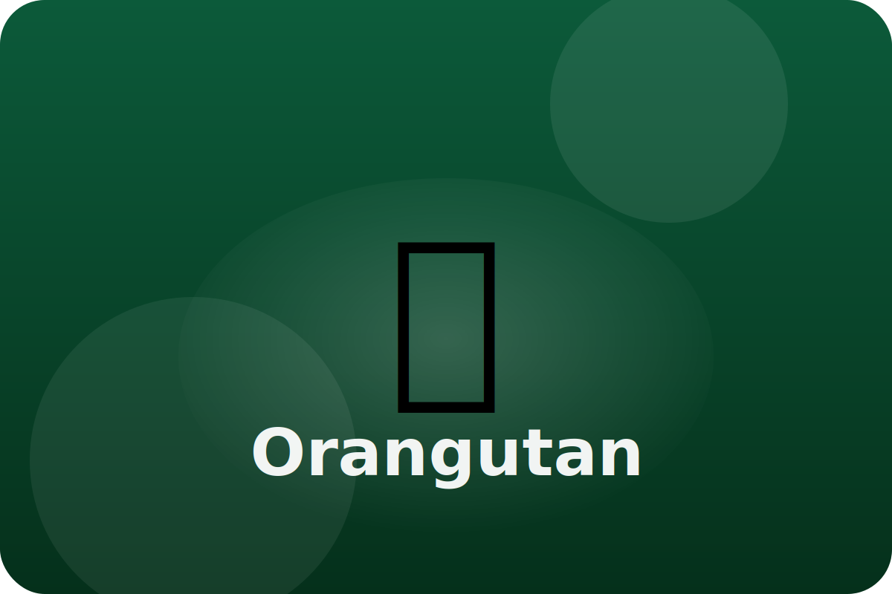

Rainforest
Tree-top thinkers
Orangutans spend their lives in the canopy. They build cozy nests out of branches and leaves every night.
Extra-Long Arms
Their arms stretch longer than their bodies, making it easy to swing from tree to tree.
Smart Problem Solvers
Orangutans learn how to use sticks to open fruit or get honey, and mothers teach skills to their babies.
Flexible Feet
Their feet act like hands, gripping branches and holding food while they munch.
Keep exploring the Orangutan
Watch the Orangutan in action
Top 10 Orangutan Facts (WWF)